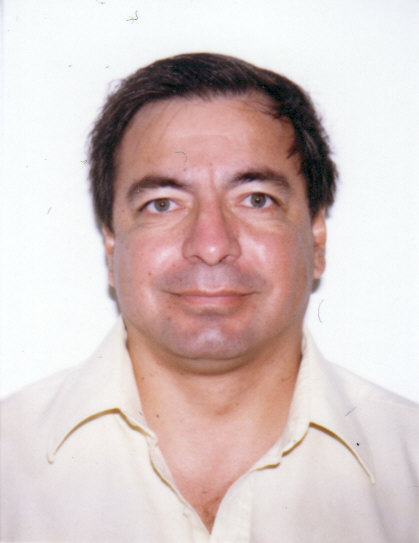

CURRICULUM VITAE

Actualmente y desde enero de 2004 soy Profesor Investigador del Departamento de Ciencias Básicas e Ingenierías, en la Universidad del Caribe de Cancún Quintana Roo.
En 1985 obtuve el grado de ingeniero aeronáutico, egresado de la Escuela Superior de Ingeniería Mecánica y Eléctrica (actualmente ESIME Ticomán), del Instituto Politécnico Nacional.
En 1994 obtuve el grado de Maestro en Ingeniería Mecánica con especialidad en Termofluidos, en la División de Estudios Postgrado de la Facultad de Ingeniería de la Universidad Nacional Autónoma de México.
Después de algún tiempo, decidí realizar el doctorado en Ciencia e Ingeniería de Materiales en el Tecnológico de Moterrey, Campus Estado de México, obteniendo el grado en enero de 2009, desarrollando modelos matemáticos para la solución de problemas de plasticidad.
Desde 1989 a la fecha he impartido cursos a nivel licenciatura sobre diferentes tópicos tales como: Análisis matemático, análisis vectorial (cálculo multivariado), mecánica de fluidos, termodinámica, transferencia de calor y métodos numéricos para ingeniería, entre otras.
Como investigador he participado en diversos proyectos de colaboración con industrias privadas, proyectos en los que he aplicado mis conocimientos sobre dinámica de fluidos computacional, y he apoyado a alumnos de maestría en el desarrollo de sus tesis usando el programa FLUENT como herramienta computacional, programa que he usado desde 1992 a la fecha.